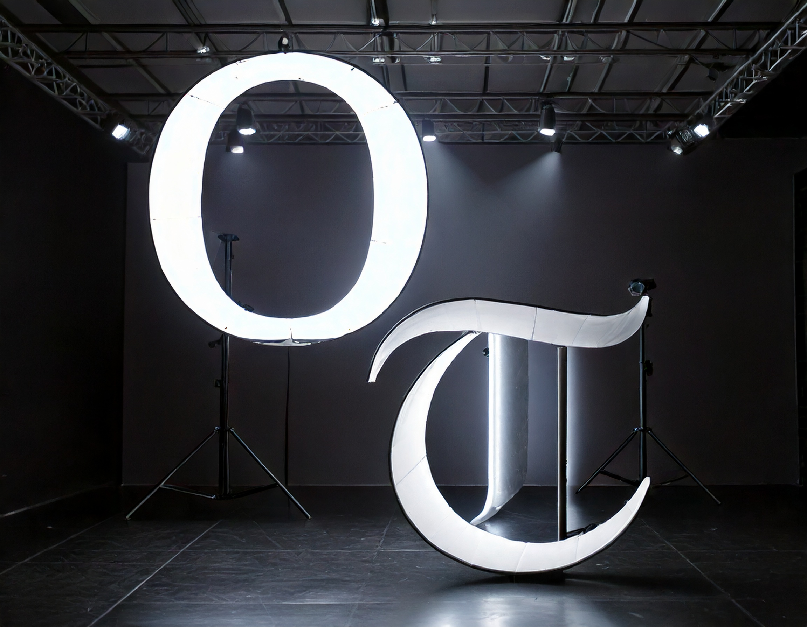
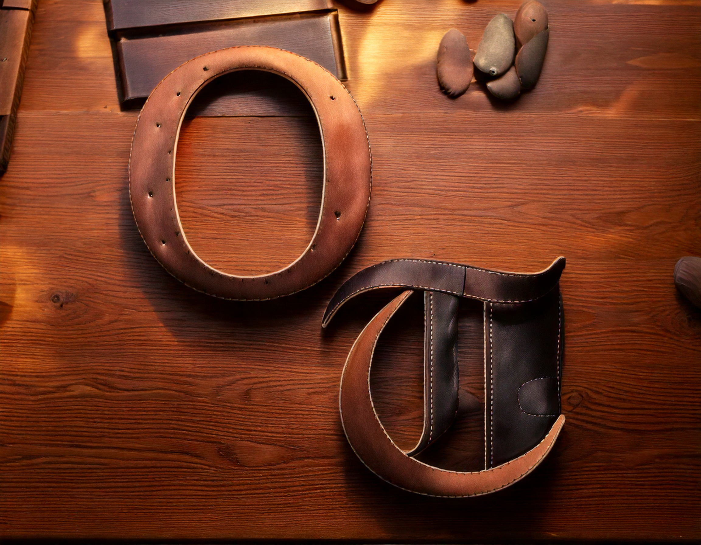
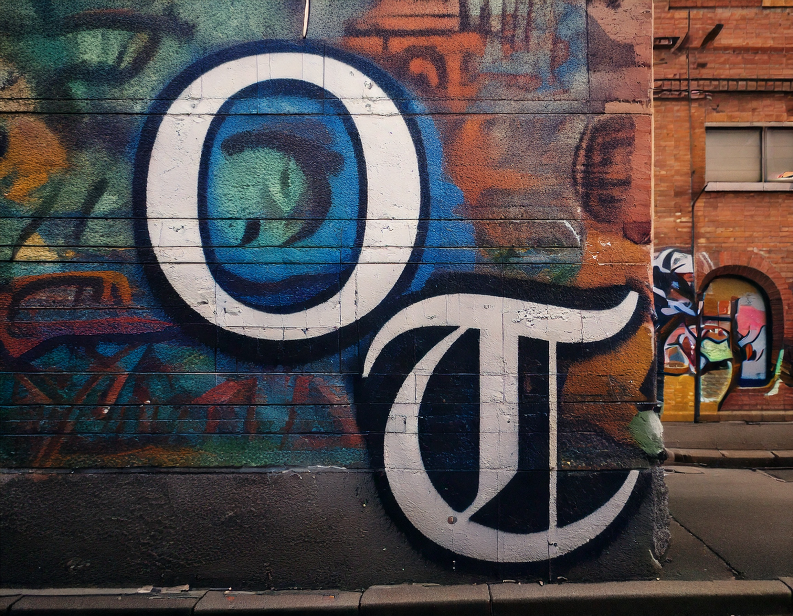

Bread: The Odd Object Using the mundane object of bread for advertising and style studies!
For this project, I wanted to experiment using bread as the main objectwith Adobe's Firefly to see how accurate and realistic the item can be generated. This trial run has gone through many variations spanning from hyper realism to applying a manga art style onto it. These images are a short selection of what came out of these generations.


Shape-Image-Meaning Taking an abstract shape and adding textures!
In this project, I focused on an abstract shape that I made in Adobe Illustrator and put back into Adobe Firefly for reference to see how much detail I can generate. I have tried smooth objects, rigid, small, large, and even complex textures like hair! These are the top generated images from the generations!
Onitsuka Branding Using Firefly for brand design!
I modeified the Onitsuka Tiger brand logo in photoshop and then utalizing my knowledge from the previous two projects, I generated multiple images and iterations of what possible direction that Onitsuka Tiger can go if it were to use this as a form of advertising.


